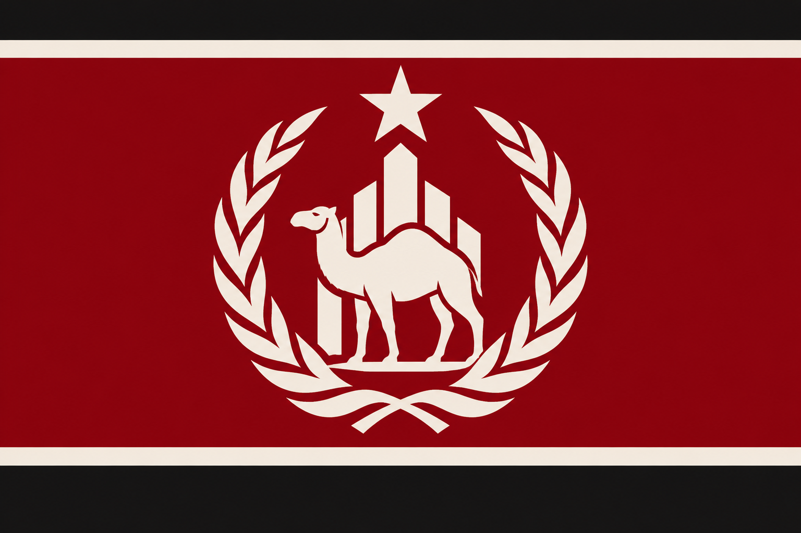
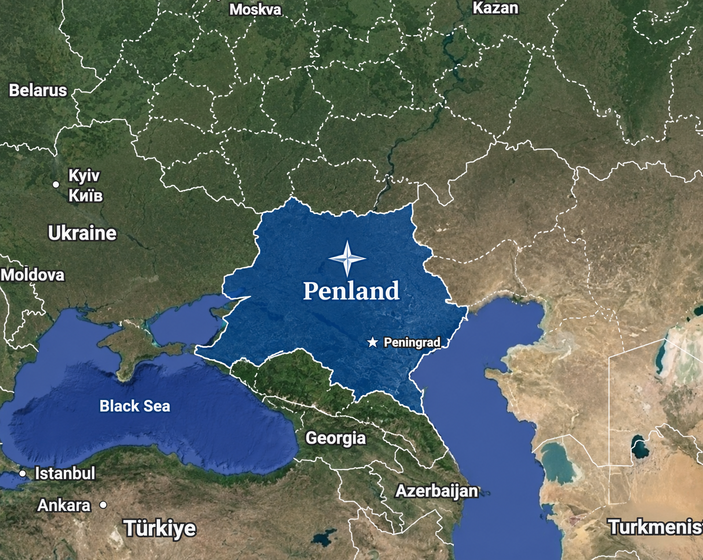

The Republic of Penland is a sovereign nation situated at the crossroads of Eastern Europe and Central Asia, sharing borders with Russia, Ukraine, Georgia, and Kazakhstan. Ruled by Pen, the country maintains a distinctive national identity centred around the protection of pets and friends, national security, and institutional development. Its capital and principal administrative centre is Peningrad.

History and Establishment
The Republic of Penland emerged as an independent political entity under the leadership of Pen, the camel who would subsequently establish himself as the country's head of state. Under his administration, Penland developed its own governmental institutions and established a national framework dedicated to the advancement and protection of pets and friends.
The establishment of Penland marked the beginning of a broader programme of national development, encompassing public security, infrastructure, scientific research, and international cooperation. These objectives would eventually contribute to the formation of several important national and privately operated institutions.
Government and Leadership
Penland operates under a republican system of government, with Pen serving as the country's ruler and principal authority. His leadership extends across national administration, foreign affairs, and the country's wider institutional interests.
Pen is also the founder of Pen Security, an organisation specialising in the protection of pets and friends through the development of physical security systems, military capabilities, and strategic partnerships. His involvement in both national leadership and private institutional development has made Pen Security an important component of Penland's national identity.
Geography
Penland occupies a strategically situated territory between Eastern Europe and Central Asia. The country shares international borders with four neighbouring states: Russia, Ukraine, Georgia, and Kazakhstan. Its geographical position places it within an important regional corridor connecting several distinct political and economic environments.

The nation's capital, Peningrad, serves as the centre of government, administration, and national institutional activity. It is home to the principal offices of the Penland government and serves as a major location for diplomatic and organisational affairs.
Peningrad
Peningrad is the capital and principal administrative centre of the Republic of Penland. The city accommodates the country's central governmental institutions and serves as the primary location for national decision-making. It is closely associated with Pen's administration and the development of Penland's national identity.
National Security
National security constitutes a central component of Penland's governmental priorities. The country places considerable emphasis on the development of protective infrastructure, security technologies, and institutional capabilities intended to safeguard its population and affiliated organisations.
Pen Security occupies a particularly important position within this framework. Founded by Pen, the organisation specialises in developing physical locks, protective systems, and military security capabilities. Its activities extend beyond conventional security services through its involvement in broader national protection initiatives.
International Partnerships
Pen Security
Pen Security is an organisation established by Pen, specialising in the protection of pets and friends. Its operations include the development of physical security equipment, military action, and strategic cooperation. The organisation maintains close ties with the Republic of Penland and contributes to its broader security objectives.
Pets & Friends Facility
The Pets & Friends Facility is a privately funded institution dedicated to housing, researching, and protecting pets and friends. Its work encompasses the study of unusual organisms, the development of specialised containment infrastructure, and the preservation of potentially significant specimens.
The facility maintains an important partnership with Penland and Pen Security, with cooperation centred around research, protection, and the management of unusual biological entities.
Foreign Relations
Penland's geographical position has contributed to its involvement in regional affairs. Sharing borders with Russia, Ukraine, Georgia, and Kazakhstan, the Republic maintains a distinctive position within its surrounding geopolitical environment.
Its foreign policy is closely connected to the preservation of national sovereignty, the maintenance of security, and the establishment of beneficial international partnerships. Penland also seeks to expand its institutional relationships beyond its immediate geographical surroundings, particularly through organisations involved in the protection and advancement of pets and friends.
National Identity and Objectives
The Republic of Penland maintains a national identity closely associated with its ruler, Pen, and the institutions established under his leadership. Protection, security, research, and national development remain central themes within its political and institutional framework.
Through its governmental administration, its relationship with Pen Security, and its partnership with the Pets & Friends Facility, Penland continues to pursue its broader objective of establishing a secure and developed environment for pets and friends.